The lab
Our group comes from many backgrounds: mathematics, biology, engineering, physics, chemistry, marine science, data science, and animal science. Undergraduate alumni have gone on to medical school and graduate school. Graduate and postdoctoral alumni work in universities, national labs, and industry.

Laura Miller
I trained in biology first and mathematics second: a B.A. in Biological Sciences at the University of Chicago, an M.S. in Zoology at Duke with Steven Vogel, and a Ph.D. in Mathematics at the Courant Institute, NYU, with Charles Peskin. After a postdoc with Aaron Fogelson at the University of Utah, I spent thirteen years on the faculty at UNC Chapel Hill and moved to the University of Arizona in 2020.
My work has been supported by the National Science Foundation, including a CAREER award, the Burroughs Wellcome Fund Career Award at the Scientific Interface, the Army Research Office, and the University of Arizona. I have worked with horses since I was eight, and I founded EquiPhysics, a nonprofit that brings horse lovers to mathematics.
Graduate students
Hrithik Aghav
Hrithik builds three-dimensional simulations of insect flight and of plankton swimming. He started in the lab as an undergraduate in 2021.
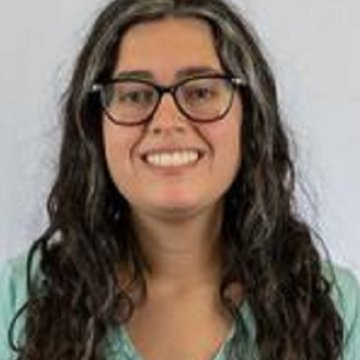
Rebekah Saucier
Rebekah studies how upside-down jellyfish feed. She models the frilly oral arms as a porous filter that catches plankton, with both immersed boundary and finite-volume simulations. Profile
Ashley Sodt
Ashley studies blood flow in the horse's aorta and when it turns turbulent. She also mentors undergraduates in the Horse Science & Innovation Lab.
Undergraduates
Isabelle Tillman
Isabelle looks at how a horse's heart rate and heart-rate variability change with gait, effort, and recovery.
Research staff and collaborators

Bernadette Genua
Bernadette runs the horse side of our research, from the barn to data collection. She is also the horse trainer and barn manager for EquiPhysics.
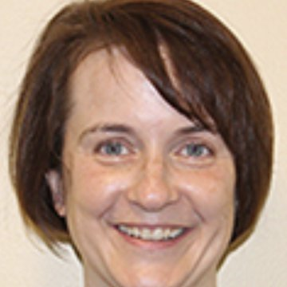
Virginia Pasour
Virginia studies how plankton travel through rivers, lakes, and the ocean, and how aquatic plants make sheltered pockets in the current. LinkedIn
Alumni
Where our PhD students, master's students, and postdocs are now.
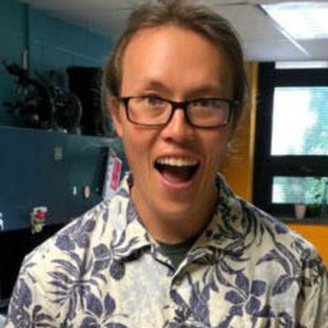
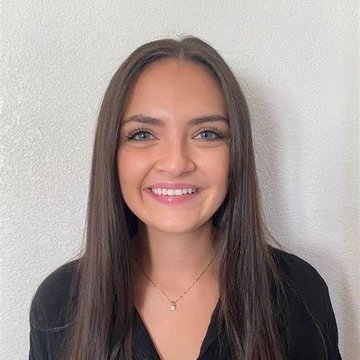
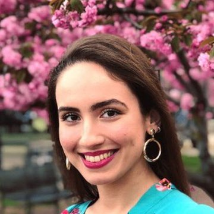
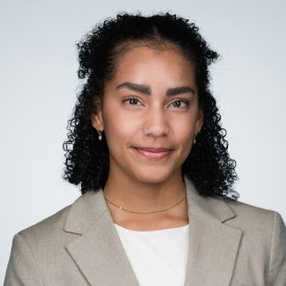
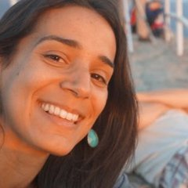
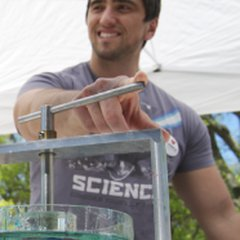
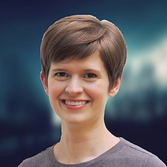
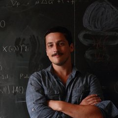
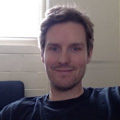
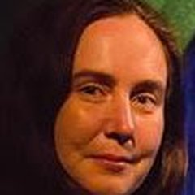
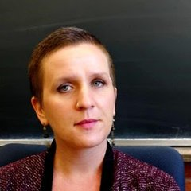
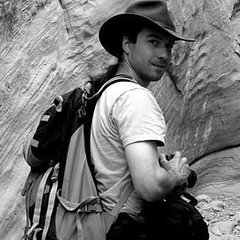
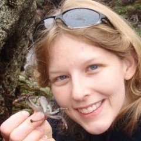
Nearly 100 undergraduates have done research with us since 2007, at UNC Chapel Hill and the University of Arizona. Thank you all!
Join us!
Graduate students
Apply to the Applied Mathematics Graduate Interdisciplinary Program or the Biomedical Engineering PhD program at the University of Arizona, and mention our lab. Email me if you would like to talk about projects.
Undergraduates
- Independent study (MATH 199 to 499). Email me to plan a project, and do it by the third week of the semester.
- The Horse Science & Innovation Lab, part of the Vertically Integrated Projects program.
- The summer REU of our Research Training Group in Data Driven Discovery.